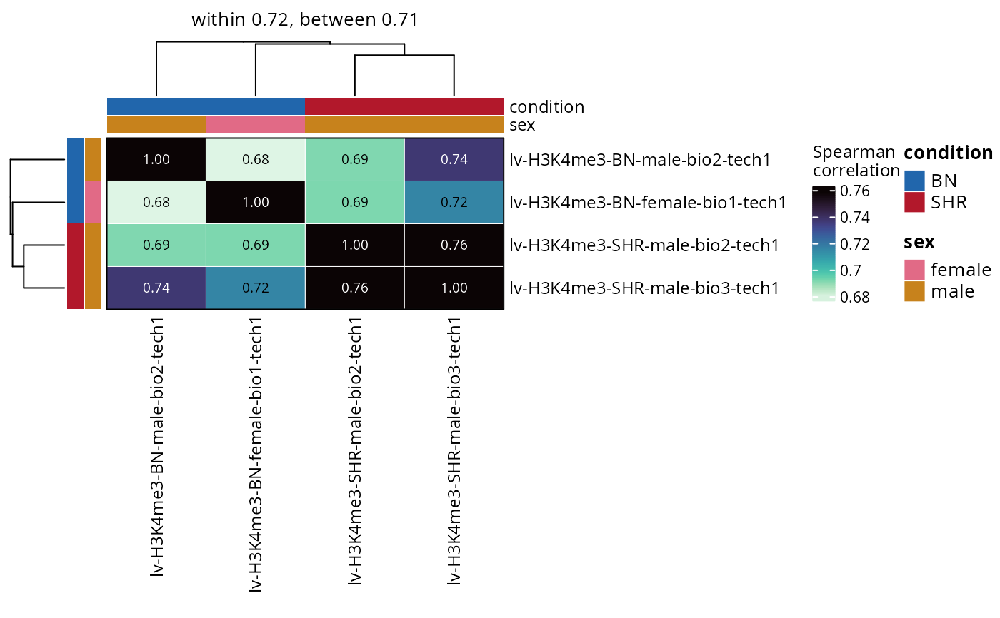
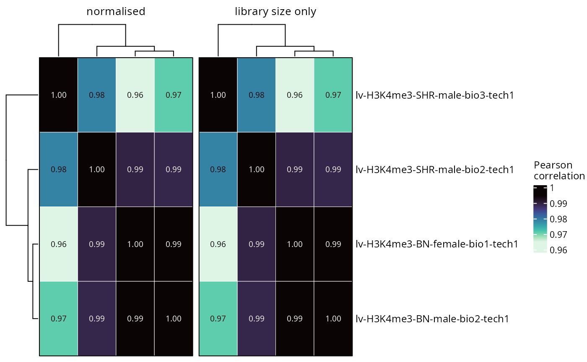

Draws the pairwise correlation between the samples over the region signal, which with a handful of libraries often reads more clearly than an ordination: replicates of a condition should sit closer to each other than to anything else.
Usage
plotSampleCorrelation(
object,
set = NULL,
contrast = NULL,
method = "spearman",
groupBy = NULL,
useOffsets = TRUE,
compareOffsets = FALSE,
facetBySet = FALSE,
cluster = TRUE,
clusteringMethod = "complete",
topRegions = NULL,
excludeDiagonal = FALSE,
palette = NULL,
limits = NULL,
showValues = TRUE,
valuesColour = NULL,
valuesSize = 2.5,
digits = 2,
title = NULL,
subtitle = NULL,
legendPosition = "right",
baseSize = 12
)Arguments
- object
RegionSetDE.counts,RegionSetDE.fitor any result object of the package.- set
Character vector with the names of the region sets used. Default:
NULL, all of them.- contrast
String with the name of a contrast, or its position, when
objectholds several of them. Default:NULL.- method
String with the correlation, one of
"spearman","pearson"and"kendall". Default:"spearman".- groupBy
String with the name of a
colDatacolumn defining the groups whose within and between correlations are summarised in the panel label. Default:NULL.- useOffsets
Logical value to indicate whether the normalisation stored in the object must be applied. Default:
TRUE.- compareOffsets
Logical value to indicate whether the same matrix must be drawn twice, once with the normalisation and once on the library sizes alone. Default:
FALSE.- facetBySet
Logical value to indicate whether each region set must get its own matrix. Default:
FALSE.- cluster
Logical value to indicate whether the samples must be ordered by hierarchical clustering rather than kept in the order of the object. Default:
TRUE.- clusteringMethod
String with the agglomeration passed to
stats::hclust. Default:"complete".- topRegions
Numeric value with the number of most variable regions the correlation is computed on. Default:
NULL, all of them.- excludeDiagonal
Logical value to indicate whether the diagonal must be left empty. Default:
FALSE.- palette
Character vector with the colours of the scale. Default:
NULL,viridisLite::mako(100, direction = -1).- limits
Numeric vector of length two with the range of the colour scale, either value possibly
NAto take that end from the data. Values outside are drawn at the nearest end rather than dropped, and how many were is reported. Default:NULL, the range of the values off the diagonal.- showValues
Logical value to indicate whether the correlations must be written in the cells. Default:
TRUE.- valuesColour
String with the colour of the written values. Default:
NULL, black or white on each cell depending on how dark it is.- valuesSize
Numeric value with the font size of the written values. Default:
2.5.- digits
Numeric value with the number of decimals written. Default:
2.- title
String with the title of the plot, rendered as markdown. Default:
NULL.- subtitle
String with the subtitle of the plot, rendered as markdown. Default:
NULL.- legendPosition
String with the position of the legend. Default:
"right".- baseSize
Numeric value with the base font size. Default:
12.
Details
The scale runs over the values off the diagonal rather than from zero to one, because every sample correlates with itself perfectly and every pair of libraries from the same assay correlates highly. A scale anchored at zero turns the whole matrix one shade and hides the differences that matter. limits takes that decision back, and either end can be left as NA to be read from the data: c(NA, 1) fixes the top at one and lets the bottom follow the values.
Values outside limits are drawn at the nearest end of the scale rather than left blank, so a cell that falls below the floor still shows as the extreme colour. That hides how far below it went, which is why the number of cells it happened to is reported.
The palette is sequential, since a correlation has a low end and a high end and nothing meaningful in the middle. A diverging scale with white at the centre reads that midpoint as an absence, which on a matrix where everything sits between 0.9 and 1 is exactly wrong.
With groupBy, the mean correlation within a group and between groups is written in the panel label. Within above between is what a usable experiment looks like; the two being equal says the condition effect is small next to the replicate noise, and that is the answer about whether to block, regardless of what an ordination suggests.
The clustering order is taken from the first panel and reused in the others, so that a comparison across compareOffsets shows the values changing rather than the rows moving. No dendrogram is drawn for the same reason: a single dendrogram cannot describe several panels, and one per panel would defeat the comparison.
Examples
counts <- loadExampleData("counts", verbose = FALSE)
counts <- normalizeCounts(counts, method = "background", verbose = FALSE)
plotSampleCorrelation(counts, groupBy = "condition")

# Pearson on the CpG island promoters only
plotSampleCorrelation(counts, set = "promoterCpG", method = "pearson")
